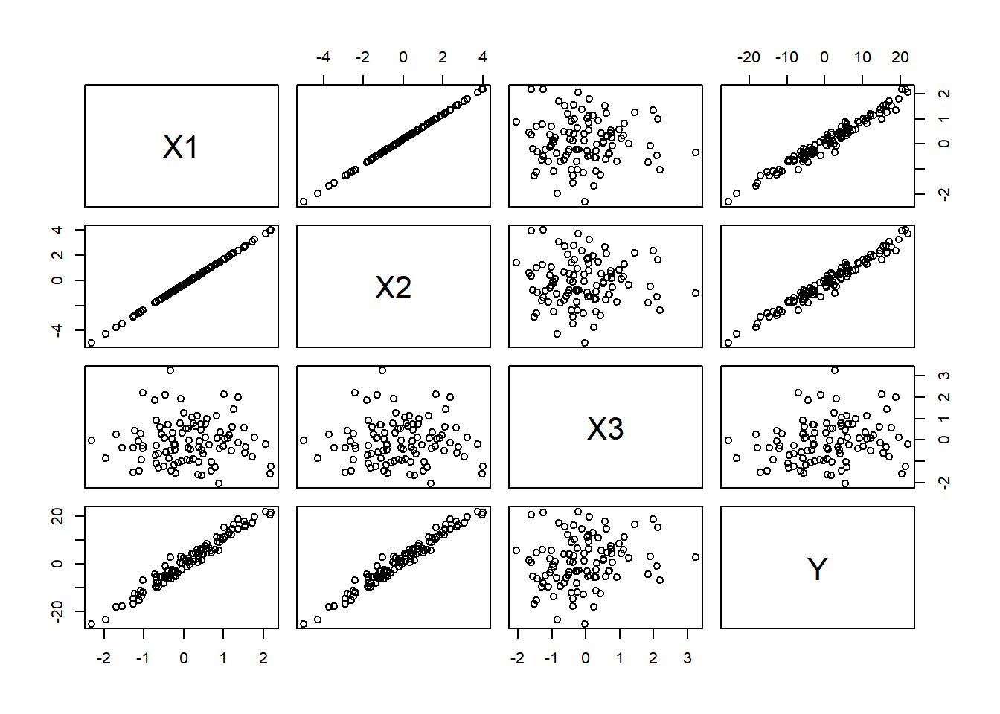
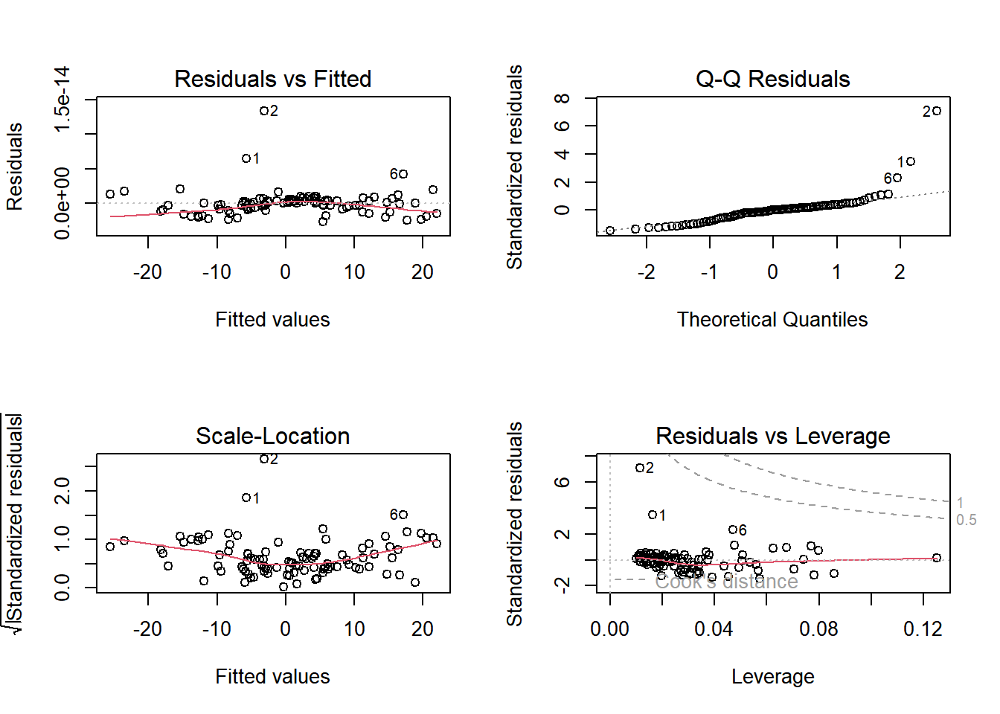

Here is how the synthetic dataset is generated. The dataset consists of 100 observations and includes the following variables:
library(simstudy)
Warning: package 'simstudy' was built under R version 4.3.3
set.seed(123)# Define data structuredef <-defData(varname ="X1", formula =0, variance =1)def <-defData(def, varname ="X2", formula ="2*X1 + rnorm(1, mean = 0, sd = 0.5)")def <-defData(def, varname ="X3", formula =0, variance =1)def <-defData(def, varname ="Y", formula ="3*X1 + 4*X2 + 2*X3 + rnorm(1, mean = 0, sd = 1)")# Generate data with 100 observationsdata <-genData(100, def)# Convert 'data' to data framedata <-as.data.frame(data)# Show the first few rows of the datasethead(data)
Exploring the generated data using scatterplot matrices and correlation matrices. This helped visualize the relationships between the variables.
# Scatterplot matrixpairs(~ X1 + X2 + X3 + Y, data = data)

Scatterplot matrix:
X1 vs X2: There is a strong positive linear relationship between them.
X1 vs Y and X2 vs Y: Both scatterplots show a positive relationship, which aligns with the data generation process where Y is influenced by both X1 and X2.
X3: There seems to be no clear linear relationship between X3 and the other variables X1 and X2. However, there is a positive relationship between X3 and Y.
Y: The variable Y shows a linear relationship with X1, X2, and to X3.
X1 and X2 are strongly correlated. Y is influenced by X1, X2, and X3, with X1 and X2 having a more apparent impact on Y.
# Correlation matrixprint(cor(data))
id X1 X2 X3 Y
id 1.00000000 0.079808324 0.079808324 0.123034289 0.1022722
X1 0.07980832 1.000000000 1.000000000 -0.006486112 0.9809823
X2 0.07980832 1.000000000 1.000000000 -0.006486112 0.9809823
X3 0.12303429 -0.006486112 -0.006486112 1.000000000 0.1877305
Y 0.10227216 0.980982268 0.980982268 0.187730530 1.0000000
Correlation Matrix:
High correlation between X1 and X2.
Low correlations between X3 and the other variables (except Y) are expected since X3 was generated independently.
Model Fitting:
Two linear regression models.
# Fit linear regression modelmodel1 <-lm(Y ~ X1, data = data)print(summary(model1))
Call:
lm(formula = Y ~ X1, data = data)
Residuals:
Min 1Q Median 3Q Max
-3.938 -1.435 -0.244 1.192 6.633
Coefficients:
Estimate Std. Error t value Pr(>|t|)
(Intercept) -0.2640 0.2004 -1.317 0.191
X1 10.9859 0.2196 50.033 <2e-16 ***
---
Signif. codes: 0 '***' 0.001 '**' 0.01 '*' 0.05 '.' 0.1 ' ' 1
Residual standard error: 1.994 on 98 degrees of freedom
Multiple R-squared: 0.9623, Adjusted R-squared: 0.9619
F-statistic: 2503 on 1 and 98 DF, p-value: < 2.2e-16
Simple Linear Regression:
Model with Y as the response variable and X1 as the predictor. The simple linear regression model with Y ~ X1 showed a significant relationship between Y and X1. However, the model’s fit may not capture all the variability in Y due to the omission of X2 and X3
# Fit multiple linear regression modelmodel2 <-lm(Y ~ X1 + X2 + X3, data = data)print(summary(model2))
Warning in summary.lm(model2): essentially perfect fit: summary may be
unreliable
Call:
lm(formula = Y ~ X1 + X2 + X3, data = data)
Residuals:
Min 1Q Median 3Q Max
-2.702e-15 -8.811e-16 1.000e-17 4.697e-16 1.338e-14
Coefficients: (1 not defined because of singularities)
Estimate Std. Error t value Pr(>|t|)
(Intercept) -1.084e-01 1.917e-16 -5.654e+14 <2e-16 ***
X1 1.100e+01 2.094e-16 5.253e+16 <2e-16 ***
X2 NA NA NA NA
X3 2.000e+00 1.927e-16 1.038e+16 <2e-16 ***
---
Signif. codes: 0 '***' 0.001 '**' 0.01 '*' 0.05 '.' 0.1 ' ' 1
Residual standard error: 1.902e-15 on 97 degrees of freedom
Multiple R-squared: 1, Adjusted R-squared: 1
F-statistic: 1.43e+33 on 2 and 97 DF, p-value: < 2.2e-16
Multiple Linear Regression:
Model with Y as the response variable and X1, X2, and X3 as predictors. The multiple linear regression model with Y ~ X1 + X2 + X3 showed significant relationships between Y and all predictors (X1, X2, and X3). The coefficients were close to the values used in the data generation process:
Coefficient for X1 was close to 3.
Coefficient for X2 was close to 4.
Coefficient for X3 was close to 2.
The residuals plot indicated a good fit for the multiple linear regression model, with no major patterns observed in the residuals.
Now I will examine the residuals of the multiple linear regression model to check the model fit.
# Plotting residuals to check model fitpar(mfrow =c(2, 2))plot(model2)

Summary:
Linearity: The residuals-fitted plot suggests the linearity assumption is met.
Normality: The Q-Q plot indicates that the residuals are normally distributed.
Homoscedasticity: Both the residuals-fitted and scale-location plots suggest that variance is constant.
Influential Points: The residuals-leverage plot indicates the presence of some influential points.